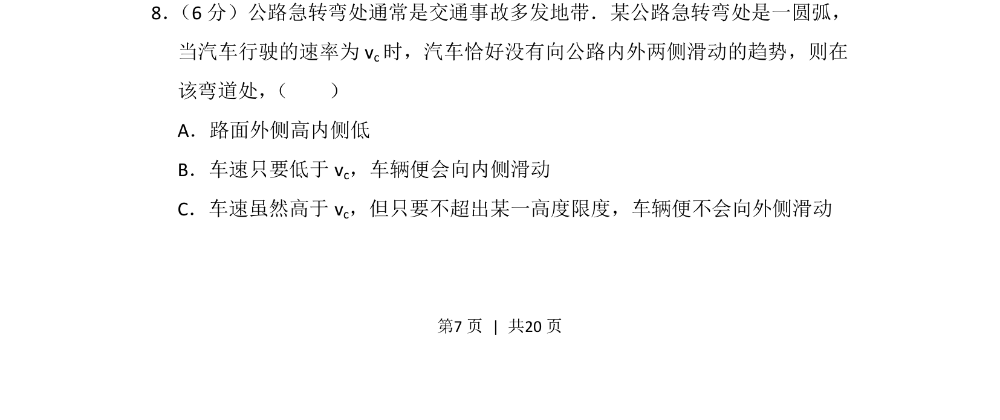
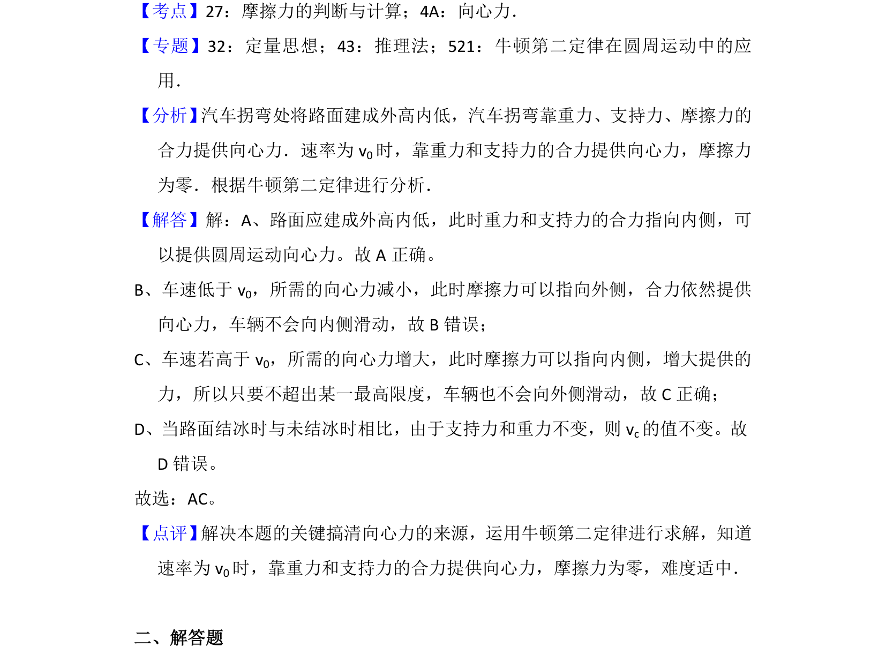

考点：向心力 摩擦力 圆周运动

该题考查汽车在圆弧弯道行驶时不侧滑的条件，涉及圆周运动向心力来源分析。

📄 原 PDF 第 7 页：
素材/真题/吉林/2008-2024·（吉林）物理高考真题/2013年高考物理试卷（新课标Ⅱ）（解析卷）.pdf
8． （6分）公路急转弯处通常是交通事故多发地带．某公路急转弯处是一圆弧， 当汽车行驶的速率为v c时，汽车恰好没有向公路内外两侧滑动的趋势，则在 该弯道处， （ ） A．路面外侧高内侧低 B．车速只要低于v c，车辆便会向内侧滑动 C．车速虽然高于v c，但只要不超出某一高度限度，车辆便不会向外侧滑动